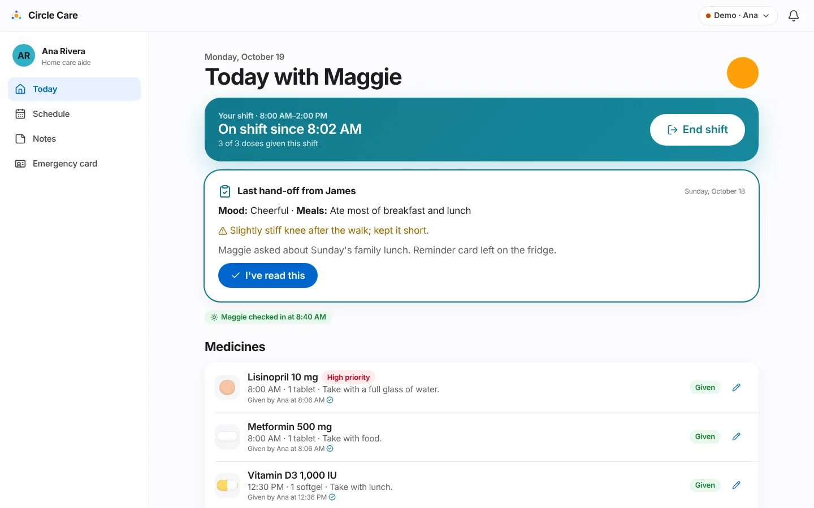
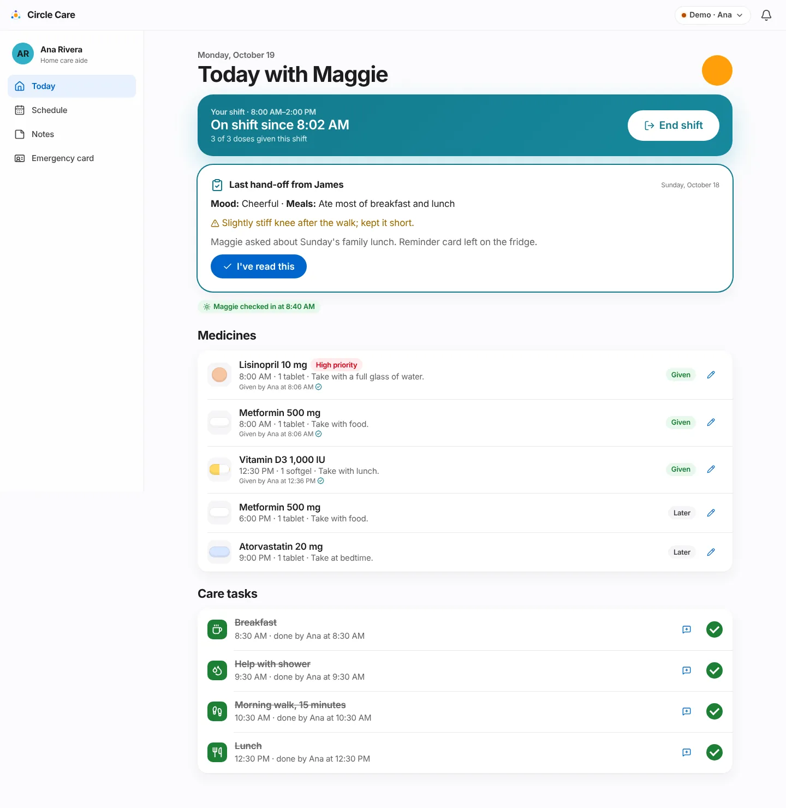
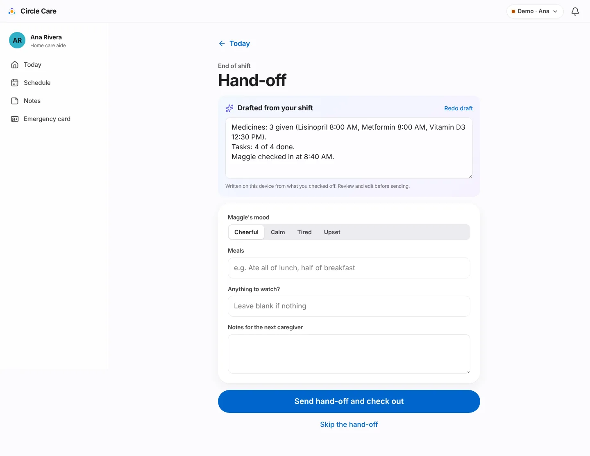
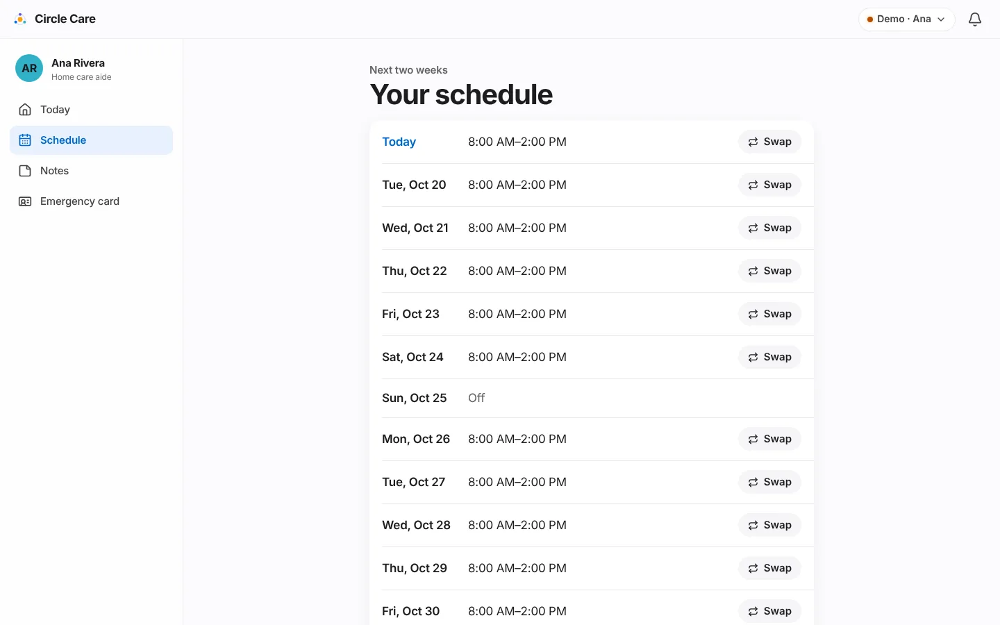
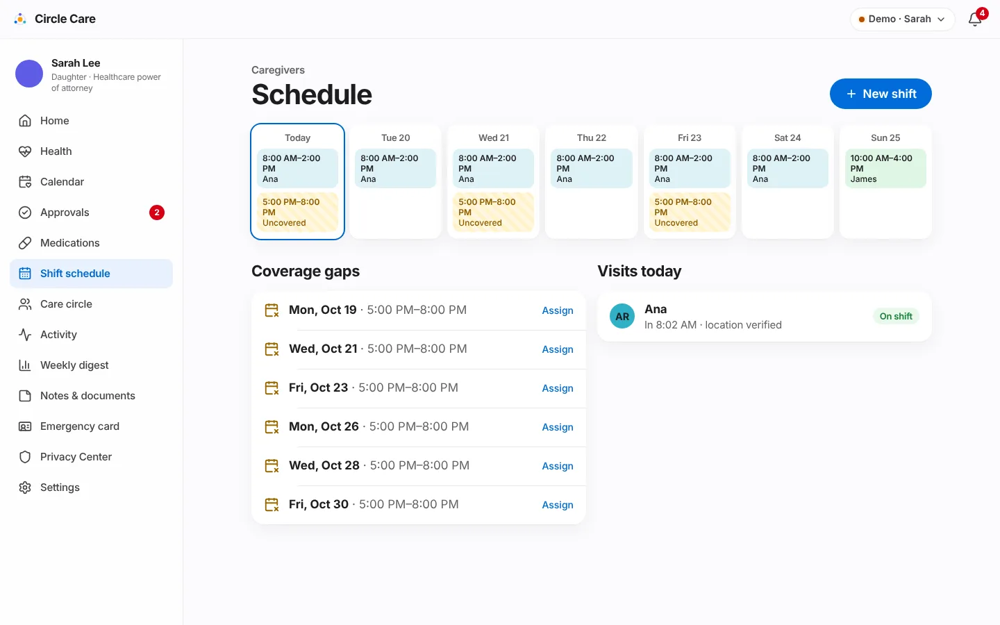

Caregiver shifts & hand-offs¶
Overview¶
What. Sarah sets up recurring shifts and assigns caregivers, who accept them. Ana checks in at Maggie's door, which unlocks the care plan for the shift; the guardian sees who is with Maggie now. At the end of the shift Ana sends a hand-off — drafted automatically from what she logged — and the next caregiver reads and acknowledges it. Late arrivals and uncovered shifts are flagged to the guardian before they become problems.
Why. "Half my morning is figuring out what happened yesterday." (caregiver hypothesis, CC-3). Coverage problems are usually discovered too late, and verbal hand-offs lose information.
Business value. Verified visits are evidence of care for families and, later, agencies (electronic visit verification is a Release 5 item). The self-drafting hand-off removes the most-skipped paperwork from a caregiver's day.
User journey¶
Check in (CC-56)¶
- Off shift, Ana's Today with Maggie shows "Not checked in" and a locked panel: "Check in to see today's care plan."
- Check in opens a sheet: "Maggie's home — We check your location once, only at check-in and check-out." → Check in — I'm here (Confirming location…) → toast "Checked in — Sarah can see you're here".
- If location fails: Location not working? Check in manually → Why are you checking in manually? (required) → Check in manually. "Sarah will see that this check-in was manual."

During the shift (CC-38, CC-59)¶
- The shift card turns teal: "On shift since 8:02 AM · 3 of 3 doses given this shift" with End shift.
- If the previous hand-off hasn't been read, it appears first: Last hand-off from James — mood, meals, any concern (highlighted), notes — and I've read this ("Hand-off acknowledged").
- A badge shows whether Maggie has checked in today. Below are Medicines and Care tasks (Medications & tasks).

Smart hand-off (CC-58, CC-82)¶
-
End shift opens Hand-off. A panel Drafted from your shift contains a summary written on the device from the shift's records, for example:
Medicines: 3 given (Lisinopril 8:00 AM, Metformin 8:00 AM, Vitamin D3 12:30 PM). Tasks: 4 of 4 done. Maggie checked in at 8:40 AM. -
Ana can edit the text or tap Redo draft. "Written on this device from what you checked off. Review and edit before sending."
- She picks Maggie's mood (Cheerful, Calm, Tired, Upset) and fills Meals, Anything to watch? and Notes for the next caregiver.
- Send hand-off and check out → "Hand-off sent — you're checked out". The Today screen shows "Thanks, Ana — your shift is complete."
- Alternatively Skip the hand-off → Why are you skipping? (required) → Check out without a hand-off. The activity feed records "Hand-off skipped — reason".

Schedule, offers and swaps (CC-54, CC-55)¶
- Ana's Your schedule shows the next two weeks (Today, then Tue, Oct 20, …) with her accepted shifts or Off.
- A New shift offered card appears when Sarah assigns her a shift → Accept ("Shift accepted").
- Swap on any day → Ask to swap this shift — choose another active family member or caregiver, add a reason → Send request ("Request sent to Sarah"). "Sarah approves the final swap."

Guardian: schedule, late arrivals and gaps (CC-54, CC-57, CC-60)¶
- Sarah's Schedule shows the next 7 days as columns with shift chips coloured by caregiver; uncovered or unaccepted shifts are striped amber (Uncovered or James (not accepted)).
- New shift (or tapping any chip) opens a sheet: Repeats on (day buttons), Starts, Ends, Caregiver (or Not assigned yet). "The caregiver gets a notification to accept."
- Coverage gaps lists uncovered shifts in the next 14 days with Assign. Visits today shows each caregiver's check-in ("In 8:02 AM · location verified" or "(manual)"), check-out and a status badge (Expected, On shift, Done).
- If a caregiver is more than 15 minutes late, a banner reads "Ana hasn't checked in — The 08:00 shift started 25 minutes ago." with Call.

Functional details & business rules¶
Demo shifts (seed data)¶
| Shift | Caregiver | Days | Time | Accepted |
|---|---|---|---|---|
s-ana |
Ana Rivera | Mon–Sat | 08:00–14:00 | Yes |
s-james |
James Lee | Sun | 10:00–16:00 | Yes |
s-evening |
— | Mon, Wed, Fri | 17:00–20:00 | No (coverage gap) |
Rules¶
| Rule | Value | Source |
|---|---|---|
| Who can check in | Members with role pro only; others are refused and logged |
visitCheckIn |
| On shift | A visit today with checkIn and no checkOut |
onShift() in policy.ts |
| Doses counted "this shift" | Scheduled between shift start − 60 min and shift end | CaregiverToday.tsx |
| Late check-in | Assigned, accepted shift; no check-in; now > start + 15 min and before shift end | lateCheckins() |
| Coverage gap | Shift with no caregiver or not accepted, in the next 14 days (guardian Home counts the next 7); today's gaps that already ended are ignored | coverageGaps() |
| Unread hand-off on guardian Home | Not acknowledged and sent in the last 3 days | GuardianHome.tsx |
| Hand-off defaults | Meals blank → "Not noted"; concerns blank → "None" | CaregiverHandoff.tsx |
| Shift reassigned | Changing the caregiver resets accepted to false and notifies the new caregiver | ShiftSheet |
| Swap approved | The shift's caregiver changes to the requested person | decide() |
| Accept a shift | Only the caregiver it was offered to | acceptShift |
Hand-off draft lines (in order; empty lines are omitted)¶
| Line | Content |
|---|---|
| Medicines | N given (name time, …). |
| Not given | name time — skipped/refused, "reason"; … |
| Still open | Doses due or overdue with no record |
| Tasks | X of Y done; still to do: … |
| Check-in | Maggie checked in at … or Maggie hasn't checked in today. |
| SOS today | Outcome of any SOS started today |
Permissions & privacy¶
| Resource | Read | Write | Propose |
|---|---|---|---|
handoffs |
guardian, family, pro (on or off shift) | pro@shift only | — |
schedule |
elder, guardian, family, pro | guardian | pro, family |
Location is checked once
The check-in sheet promises "We check your location once, only at check-in and check-out." Continuous tracking is out of scope. In the prototype no location is read at all.
The elder cannot read hand-offs in the current matrix (handoffs read = guardian, family, pro). This raises the same "her data, her decision" question as guardian-only notes; see permission matrix — notable design choices. The handoffs, vitals and appointments resources were added to the code after that document's table was written.
Notifications¶
| Trigger | Recipients | Severity | Lock-screen text | In-app detail |
|---|---|---|---|---|
| Caregiver > 15 min late | Guardian, caregiver | Warning | Circle Care needs your attention | Ana hasn't checked in for the 08:00 shift. |
| Shift offered | Caregiver | Info | You have a new shift in Circle Care | Sarah offered you a shift, 17:00–20:00. |
| Swap requested | Guardian | Info | You have a new request in Circle Care | Ana asked to swap a shift with James. |
| Swap decided | Caregiver | Info | You have an update in Circle Care | Sarah approved your request: Swap 08:00–14:00 shift to James |
Accessibility¶
- The shift card and check-in sheet use large buttons and plain verbs (Check in — I'm here, End shift).
- Mood uses a segmented control with text labels; the summary textarea has a screen-reader label Summary.
- The week grid shows the caregiver name in text, not only colour; gaps use a striped pattern plus the word Uncovered.
/app/caregiverpasses axe-core. The hand-off and schedule screens are covered by e2e but not by the axe list.
Data captured¶
| Entity | Fields |
|---|---|
Shift |
caregiverId, days[], start, end, accepted |
Visit |
shiftId, caregiverId, date, checkIn, checkOut, manualReason? |
Handoff |
visitId, by, at, mood, meals, concerns, notes, summary, acknowledgedBy?, acknowledgedAt?, skippedReason? |
Approval (shift-swap) |
payload {shiftId, to} |
Edge cases & error states¶
| Situation | Behaviour |
|---|---|
| Opening Hand-off when not on shift | "You're not on shift right now." with Back to today |
| No shift today | "No shift scheduled today"; no check-in button |
| Already checked out | "Checked out at …"; the plan stays hidden |
| Caregiver checks in with no scheduled visit | A visit is created against her first shift |
| Maggie paused sharing | The caregiver app shows "Maggie has paused sharing" (except SOS) |
| Saving a shift with no days | Save shift disabled |
Test coverage¶
| Type | Test |
|---|---|
| E2E | Smart hand-off draft and check-out (draft contains Medicines: and Tasks:, then Checked out at) · Missed dose escalates… (includes Check in — I'm here) · CC-19 caregiver off shift cannot open notes · Elder pauses sharing; caregiver view is blocked |
| Unit | policy.test.ts — handoffs and schedule for every role, on and off shift |
| Gap | No unit test for lateCheckins() or coverageGaps(); no e2e for shift swap or shift offers |
Known limitations & production gaps¶
| In the prototype | In production (planned) |
|---|---|
| Location check is a 0.9-second animation | One-time geofence check against the home address at check-in/out; manual override with reason |
| On-shift state comes from the device clock | Server-recorded check-ins (see permission matrix — production enforcement) |
| Hand-off draft is rule-based text | Voice visit notes and photo proof of care (R4) |
| One recurring pattern per shift; no exceptions or holidays | One-off changes, time off, shift marketplace (R4) |
| No timesheets | Timesheets, invoices and EVV for agencies (R4, R5) |